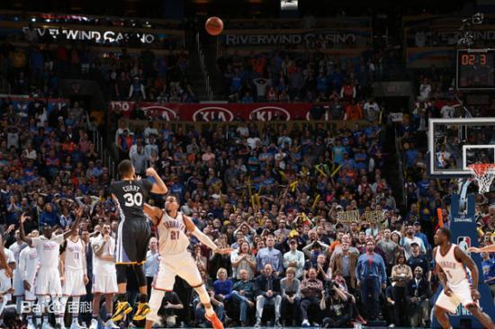
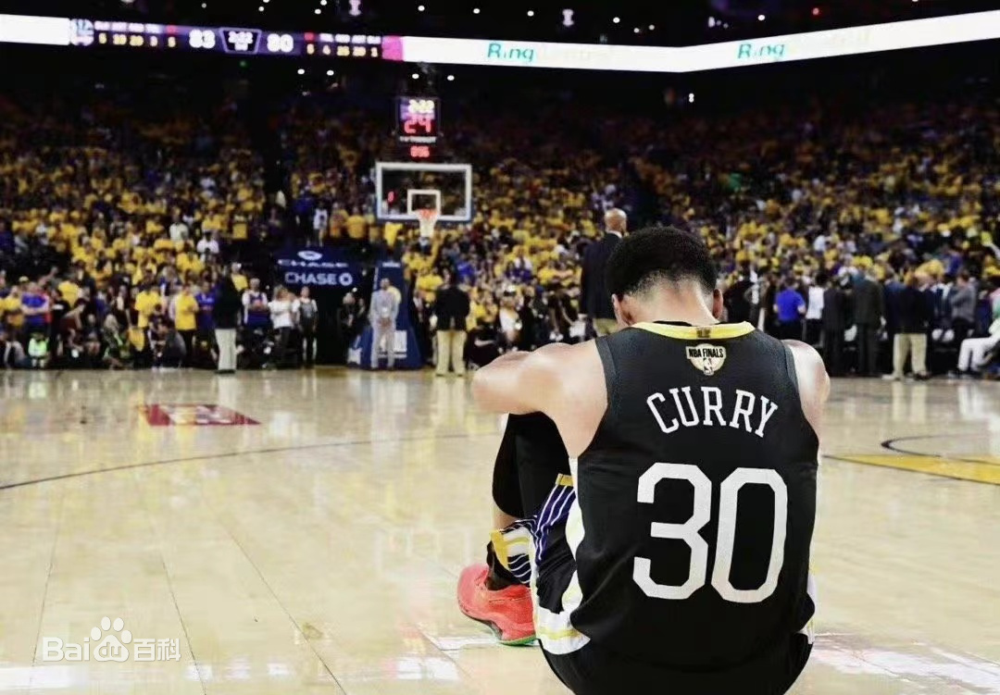
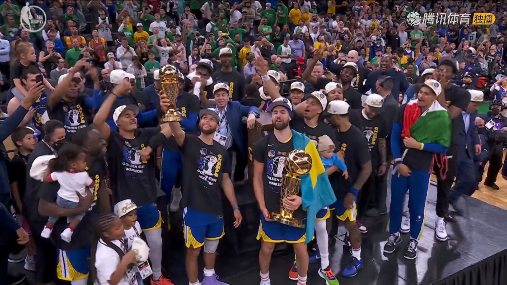
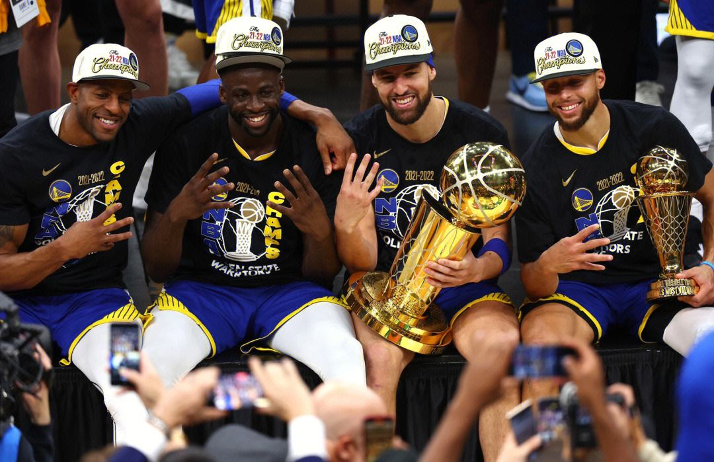

我的偶像----Stephen Curry |
斯蒂芬·库里（Stephen Curry），全名沃德尔·斯蒂芬·库里二世（Wardell Stephen Curry II），1988年3月14日出生于美国俄亥俄州阿克伦，美国职业篮球运动员，司职控球后卫，效力于NBA金州勇士队。
斯蒂芬·库里于2009年选秀首轮第七顺位进入NBA，而后一直效力于金州勇士队，新秀赛季入选最佳新秀第一阵容；2014-15、2016-17、2017-18、2021-22赛季四次夺得NBA总冠军，并于2021-22赛季当选总决赛MVP（FMVP）。
两次荣膺常规赛MVP；2015-16、2020-21赛季两次荣膺常规赛得分王；2021-22赛季荣膺西部决赛MVP；8次入选最佳阵容（4次一阵、3次二阵、1次三阵）；9次入选全明星首发阵容，2021年10月入选NBA75大巨星，12月成为NBA历史三分王，2022年荣膺全明星正赛MVP。
2015年6月17日，勇士以总比分4-2战胜骑士，库里夺得生涯第一个NBA总冠军。同时，四年骑勇大战也正式拉开帷幕！！！
2016年2月28日，勇士对阵雷霆，凭借斯蒂芬·库里在加时赛最后时刻的超远距离三分准绝杀，勇士121-118险胜对手。

2019年6月3日G2，鲁尼被撞出界，肋骨骨折；2019年6月11日G5，杜兰特带伤复出，但在第一节就遭遇跟腱断裂，赛季报销；2019年6月14日G6，克莱左膝十字韧带撕裂，赛季报销，勇士最终2-4不敌猛龙，无缘三连冠王朝，也是勇士球迷最意难平的一年。

2022年6月17日，在经历了两年的伤病潮的低迷之后，勇士4-2战胜凯尔特人，成为首支在北岸花园球馆拿下总冠军的球队，库里生涯首次荣膺FMVP，成为NBA历史上首位曾全票当选常规赛MVP和全票总决赛MVP的球员。


|
|
| |